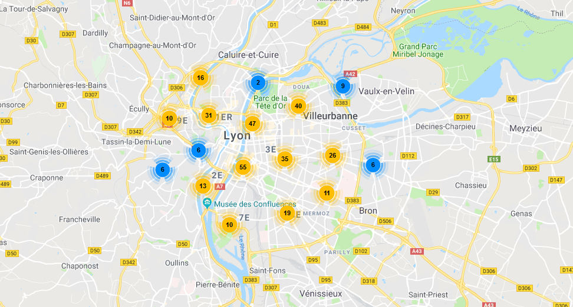
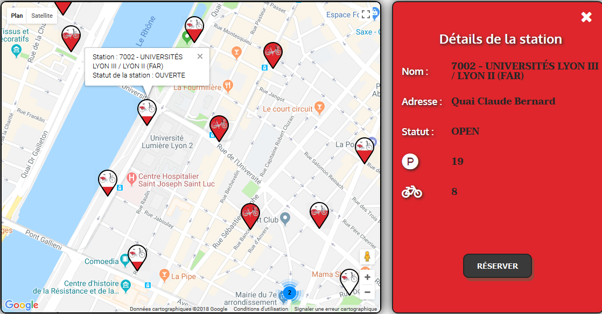
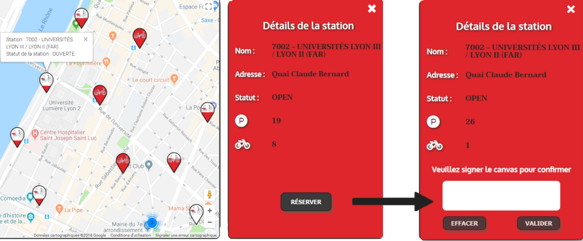
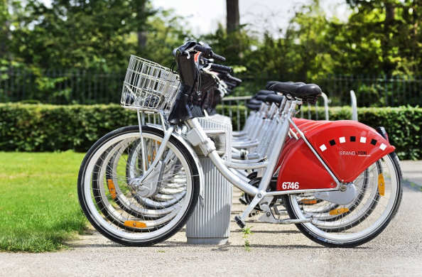
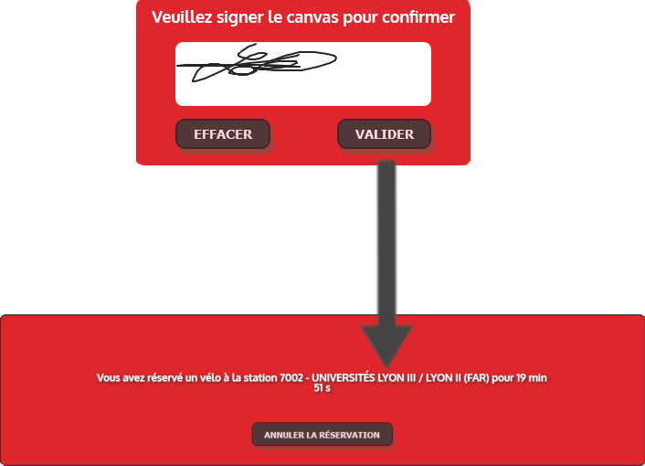
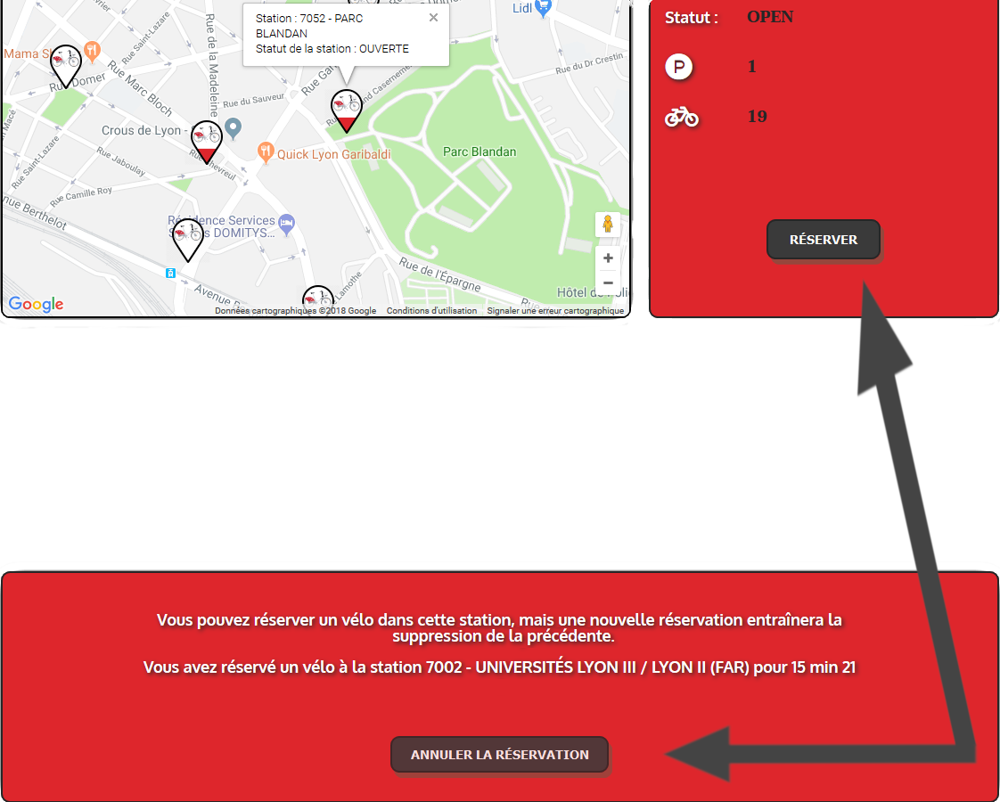
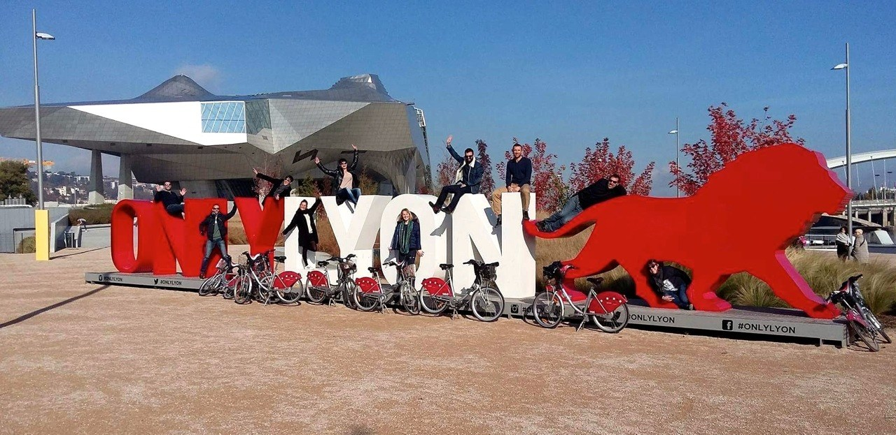

Cliquez sur le groupe de marqueurs correspondant à la zone de
votre station.

Cliquez sur le marqueur de votre station pour faire apparaître
ses informations.


Appuyez sur le bouton "Réserver" afin d'ouvrir le canvas de
réservation.

Une fois votre canvas signé et validé, votre réservation est
enregistrée et notifiée.
À présent, vous avez 20min pour aller chercher votre vélo'v à sa
borne.


Si vous changez d'avis, vous pouvez toujours "Annuler votre
réservation" ou "Réserver" dans une autre station.